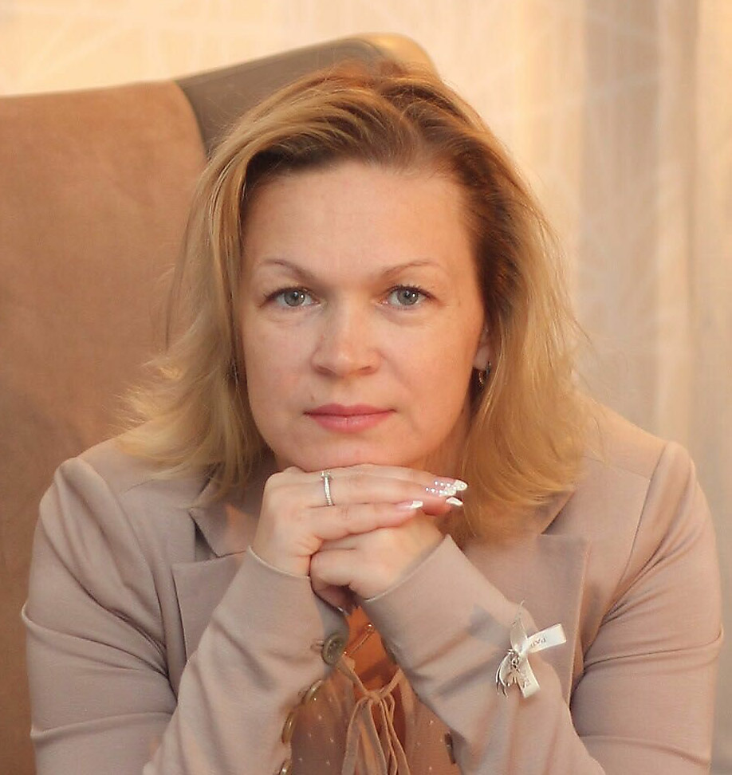

Здравствуйте!
Добро пожаловать на мою страничку!
Позвольте представиться: меня зовут Лана, я – психолог, гештальт-терапевт, работаю с клиентами с 2012 года.
Я закончила факультет психологии МГУ им. М.В.Ломоносова, прошла более 1000 часов доп. образования (подтверждено сертификатами).
ПРИГЛАШАЮ НА ТЕРАПИЮ тех, кто хочет наладить отношения с близкими или коллегами, разрешить конфликт, повысить самооценку и уверенность в себе, научиться отстаивать себя, разобраться в своих желаниях и потребностях, пережить сложную ситуацию, получить поддержку и профессиональную помощь.
Длительность терапии зависит от темы, с которой приходит человек. Некоторые ситуативные вопросы (например, конфликт с начальником) могут быть решены за 1–5 встреч, другие (например, изменение каких-то черт характера) могут потребовать долгосрочной работы.
Я работаю индивидуально, а также с парами и семьями.
Сейчас веду прием на Таганке и на Сухаревской, возможна также работа по скайпу.
Вы можете связаться со мной по телефону +7 (915) 479-6840.
Подробнее о темах, с которыми я работаю:
- взаимоотношения с родителями, детьми, другими членами семьи
- взаимоотношения в паре
- взаимоотношения с коллегами, друзьями, начальством и другие отношения на равных или неравных позициях
- самооценка, неуверенность, неприятие себя, сложности в самопредъявлении, отстаивании себя и своих интересов, умение говорить «нет»
- трудности в понимании собственных желаний и потребностей, сложности в принятии решений
- лень, сниженная мотивация
- эмоциональная зависимость
- травмирующие ситуации (потеря близкого человека, эмоциональное или физическое насилие), сложные жизненные ситуации, страх предстоящего важного события
- подавленность, высокая тревога, депрессия, панические атаки, невыносимые чувства (агрессия, страх, фобии)
- сложности в сексуальной сфере
Подробнее о моем образовании:
- 1992–1997
- Факультет Психологии МГУ им. М.В.Ломоносова, кафедра клинической психологии
- 1995–1998
- Гештальт-программа под руководством доктора психологических наук Е.Т.Соколовой
- 2013–2014
- Первая ступень по гештальт-терапии Московского Института Гештальта и Психодрамы (МИГиП). Тренер программы Надежда Лубяницкая
- 2014–2018
- Вторая ступень по гештальт-терапии МИГиП. Тренер программы Надежда Лубяницкая
- 2014
- Учебно-терапевтический интенсив МИГиП в Турции
- 2014
- XIX Международная научно-практическая конференция МИГиП «Неизбежность и Неожиданность»
- 2014
- Совместный семинар МИГиП и GATLA в Москве по теме «Работа с парой»
- 2015
- Учебно-терапевтический интенсив МИГиП в Литве
- 2015
- Два семинара цикла «Сексуальность и гештальт» в Санкт-Петербурге у Ирэны Голуба (Латвия)
- 2015
- European Gestalt Therapy Training Program in Slovenia, Gestalt Associates Traning Los Angeles (сокращенно GATLA – одна из ведущих мировых школ по гештальт-терапии, возглавляемая Бобом и Ритой Резник, учениками Фредерика Перлза, основателя гештальт-терапии, в летних европейских обучающих программах участвуют психотерапевты более, чем из 40 стран, сайт – gatla.org)
- 2015–2016
- Программа Института Практической Психологии Личности ГЕНЕЗИС ПРАКТИК «Практическая психология характера и методы работы с психологической травмой»
- 2016
- Учебно-супервизорский интенсив «Гешталь-подход в работе с парой», тема «Сексуальность и нарушение коммуникации в паре», тренеры Ирэна Голуба (Латвия) и Мария Лекарева (МИГиП)
- 2016
- XXI Международная научно-практическая конференция МИГиП «Гештальт и Психодрама: перерабатываем прошлое, строим будущее»
- 2017
- Первая ступень по психодраме МИГиП. Тренеры программы Мария Пономарева и Нифонт Долгополов
- 2016
- European Gestalt Therapy Training Program in Portugal, GATLA
- 2012–2017
- Личная терапия, более 350 часов
- 2016–2017
- Участие в супервизорских группах